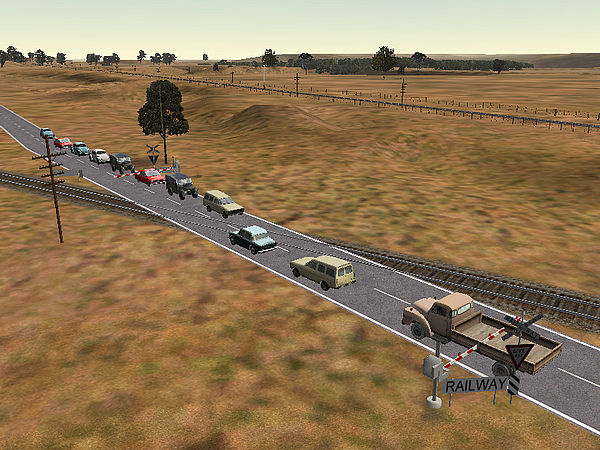
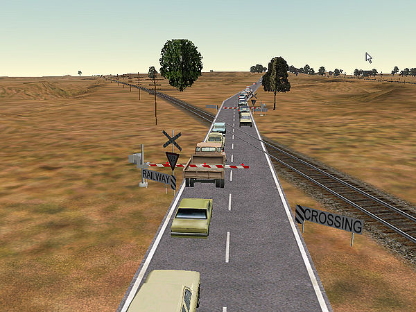
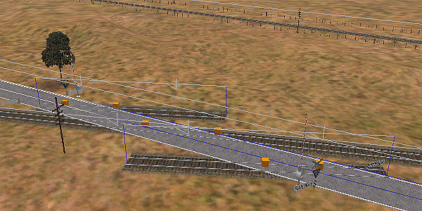
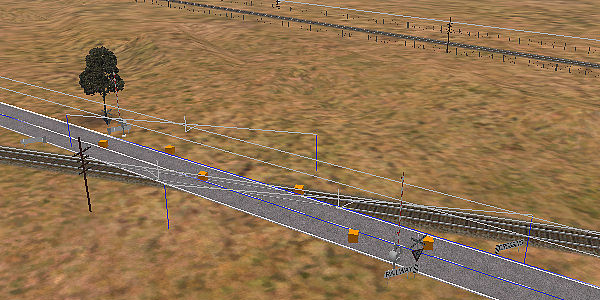
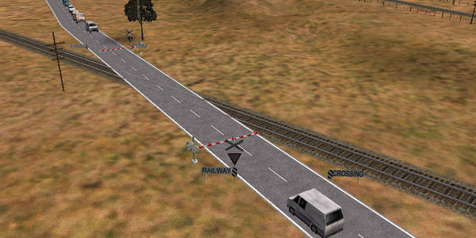

The problem is that the cars stop their separation distance away from the track (or more precisely away from the orange cube on the tracks that marks the presence of a level crossing): like this.......


The clever solution was first used by Bruce Bridges in his Conrail Indy route v.1.
Open the Route Editor and place two pieces of straight track parallel to and on either side of the level crossing: here I've used a couple of 30m straight pieces:
Select and delete the old crossings:
Now place the crossings anew (as shown below, both with road visible and made invisible to demonstrate where they sit):

Finally select each piece of track and depress it below the terrain: you should end up with this:

Save and quit and try out the crossing in the sim: as you can see, we've almost got it right - but one car still has managed to stop within the booms:
Back into Route Editor: with experimentation, you'll find that there is a limit to how far from the first track the extra track can be placed: when you place the crossing gates, you'll find that the orange cubes don't extend from track to track. However, this is not a problem as there is no reason why you can't successfully place a double track piece to stop the cars even further away.
The image below demonstrates the use of a double track to extend the "no-go" zone further away from the crossing as well as the fact that the orange cubes of the emplaced crossing gates have a limit as to how far they will jump to another: it doesn't really matter that the orange cubes are not on the end (dummy) tracks as they are on the trailing side of the crossing as far as the road traffic is concerned.
And here is the final result in the sim:
